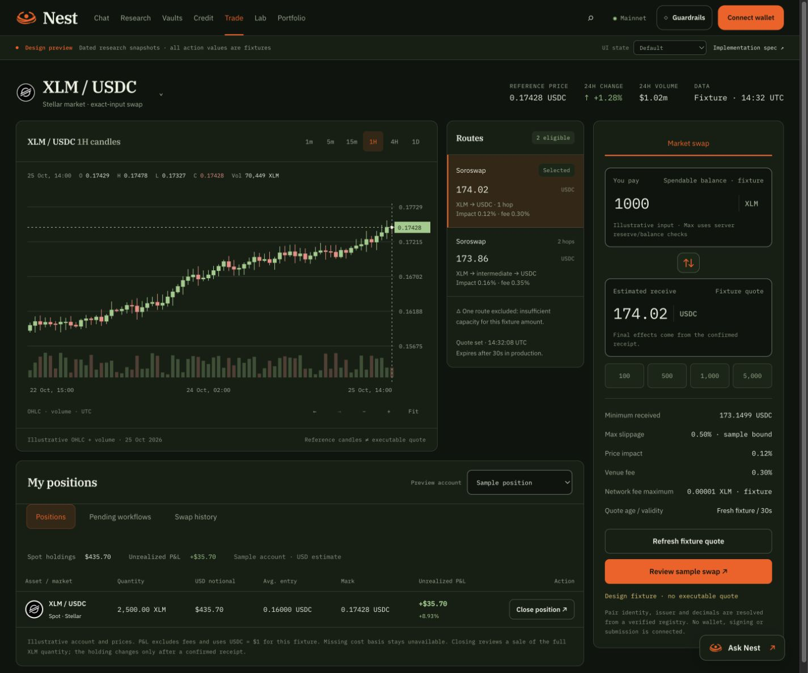
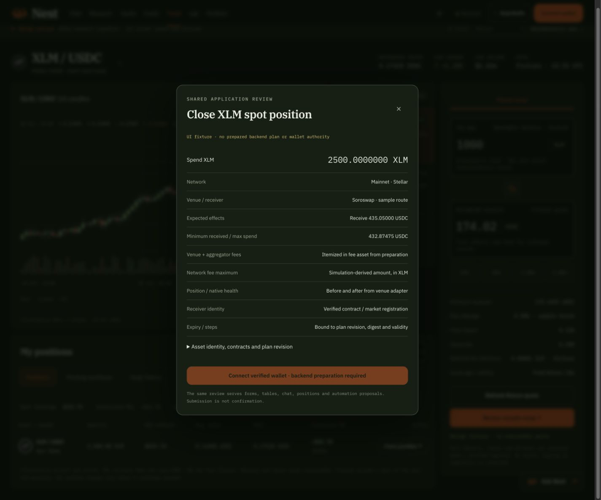
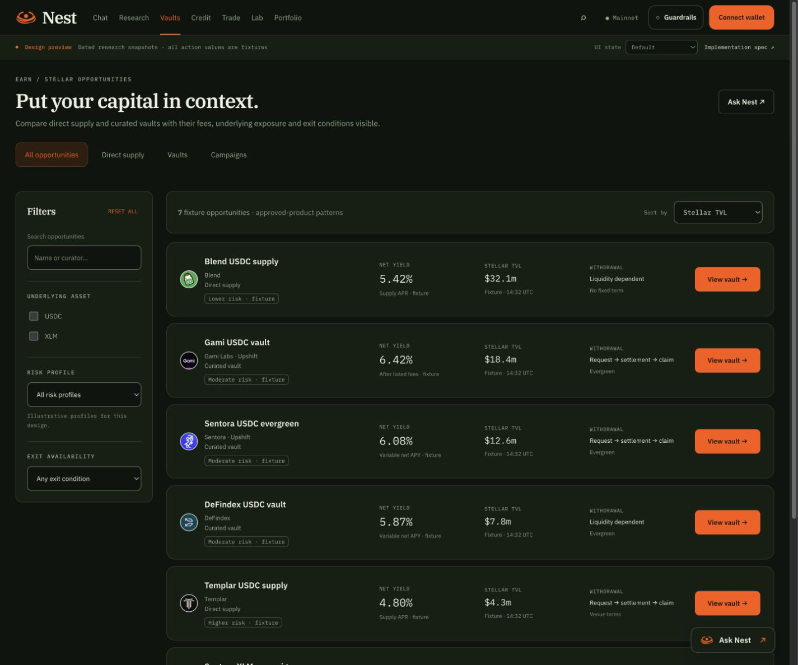
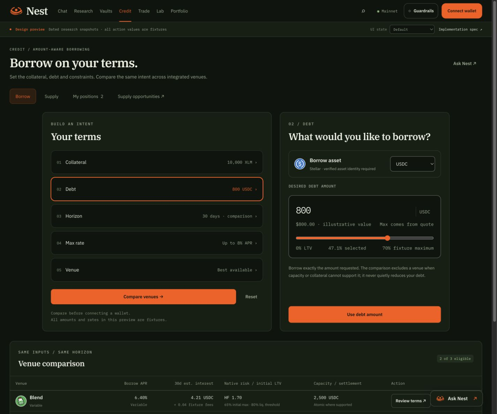
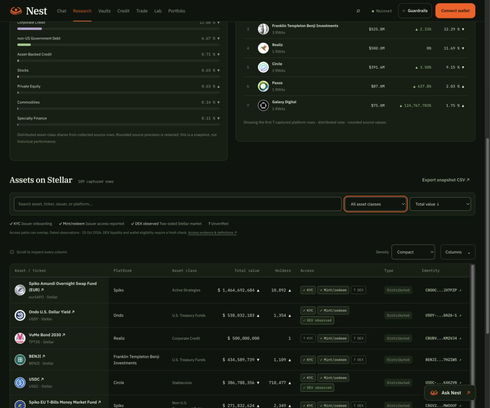

Trading, risk and asset access.
The current implementation of the screenshot feedback. The original Nest identity, forest surfaces, cream type and orange actions remain. This supplement supersedes the earlier chart, filter, Credit sizing and RWA row-interaction recipes.
All trading accounts, prices, quotes and risk profiles are design fixtures. RWA access uses dated source observations. Financial preparation and wallet signing remain backend integration work.
Trade: candles and My positions
The chart shows candle bodies and wicks, a right price axis, UTC time axis, last-price marker, volume and an OHLC readout. Six intervals update the actual fixture series. Earlier/later, zoom and Fit controls work; keyboard arrows inspect individual candles. The chart resizes with its container and disposes its observer when leaving the route.
My positions sits under the market context. Quantity, USD notional, average entry, mark and signed unrealized P&L appear together. The sample 2,500 XLM at a $0.17428 mark has $435.70 notional and +$35.70 / +8.93% unrealized P&L against a $0.16 basis. Fees are excluded and the fixture assumes USDC = $1. A missing basis shows Unavailable.
Close position opens the shared review for the full exact quantity, 2500.0000000 XLM. The sample quote receives 435.05000 USDC with a minimum of 432.87475 USDC. Dismissing or reviewing leaves the holding unchanged.


| Production data | Required behavior |
|---|---|
| Candles | Canonical pair/network; interval; timestamp; real OHLC decimal strings; volume in base units; source and coverage gaps. Sparse price samples never become claimed real candles. |
| Positions | Owned and spendable quantity, canonical identity, valuation and FX timestamps, fee-aware cost basis and its methodology. Preserve unknown basis and pending actions. |
| Close | Fresh exact-input sale quote for the available quantity, reserve/fee checks, minimum proceeds, receiver, expiry and Guardrails revision. Shared review and wallet signature. Reconcile confirmed effects. |
Vaults: risk profile above exit
The sidebar now contains search, underlying asset, Risk profile and Exit availability. Risk options are All, Lower, Moderate, Higher and Unrated. Filters combine with categories and reset together. Yield composition and Before you deposit were removed from this sidebar.
Risk badges are explicitly illustrative fixtures. Production needs an agreed methodology with evidence, version, observation time and an unclassified state. Actual yield breakdown and withdrawal timing remain on the product detail and action review.

Credit: a narrower builder
The term rail and editor sit in a centered group capped at 1180px, with a 24px gap. The left/right ratio is 1.15 to 0.85. Below 801px of workspace width they stack in a group capped at 640px. The comparison below retains its available workspace width.

RWAs: independent access paths
Each source row has three visual indicators. A check marks a reported requirement or observed access path; a question mark means unverified. These dimensions can overlap. Distributed and Represented remain separate source classifications.
| Indicator | Meaning and evidence |
|---|---|
| KYC | Issuer onboarding requirement supported by issuer documentation. It does not classify every secondary-market trade. Requirements not established by the sources stay unverified. |
| Mint/redeem | Issuer subscription and redemption are reported. Timing, eligible investors, minimums and settlement remain subject to issuer terms. This is not an executable Nest route. |
| DEX observed | A two-sided XLM orderbook was observed for the exact Stellar asset code and issuer. This is a dated liquidity observation, not an amount-specific quote, account authorization check or guarantee of a fill. |
| ? | No verified evidence. An empty XLM orderbook does not exclude other markets or AMMs; a missing KYC description never means no KYC. |
The capture covers 109 source rows across 101 asset pages, with 75 classic Stellar identities checked through public Horizon orderbooks. It records 13 issuer KYC requirements, 50 reported issuer mint/redeem paths and 13 observed two-sided DEX markets. Those are evidence counts, not recommendations.
Asset names are normal links to the exact assetUrl supplied by RWA.xyz, opening in the same tab. Clicking another non-interactive cell has the same destination. The contract identity retains its separate exact explorer link. Search, sort, page size, column controls and CSV export retain the source identities.

Evidence: per-identity access metadata, rendered asset-page observations, public orderbook observations. Hover each badge for its explanation and source; definitions are visible here and in the table legend.
Primary issuer sources: Circle KYC, USDC on Stellar, Spiko identity checks, Spiko allowlisted wallets, USDY and Stellar mint/redeem, Ondo issuer onboarding, US fund identity verification. Market evidence follows the Horizon orderbook model.
Verification and implementation handoff
Recorded interaction and responsive checks cover chart intervals/zoom/keyboard, exact close bounds, unknown basis, risk filtering/reset, Credit proportions, badges, same-tab source navigation and mobile/tablet/desktop containment. The model checks cover 720 OHLC candles, decimal-safe accounting, gain/loss/missing basis and all 109 RWA identities.
The machine aggregate is ui-design-spec.json. Area contracts remain in markets.json, credit.json and research.json. The handoff archive is generated from the same sources.